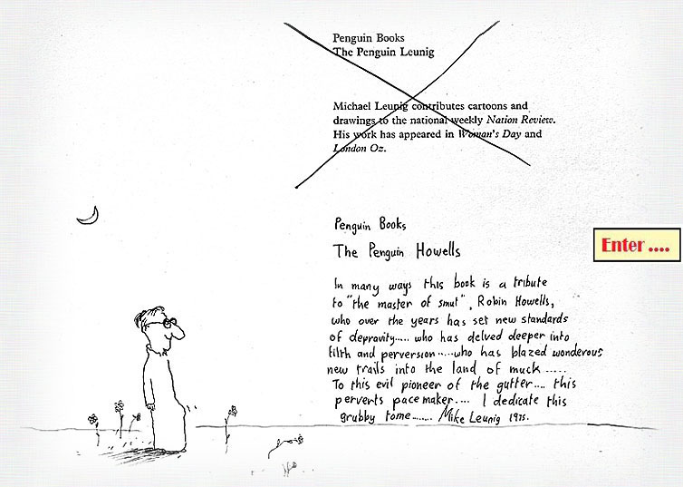

This personal copy of the first edition was inscribed by Mike Leunig when he and
Robin were colleagues at Nation Review. Taken from the frontispiece of
The Penguin Leunig, introduced by Barry Humphries (ISBN 0 14 00.4019 6).
So, who IS Robin Howells?
Robin has worked for more than 45 years in the Communications business, including
extensive experience in journalism in daily newspapers and magazines, Public
Relations, Broadcasting and Advertising.
He held senior executive positions at The Herald, The Age,
Newsday, Nation Review and the Victorian Farmer, and
was Victorian Manager of Australia's first national media representation company,
which represented Press, Radio and Television in all States.
- Made a Fellow of the Advertising Institute of Australia (the
highest membership ranking) in the 1960s; also holds the Associate and Licenciate
Diploma from the A.I.A.
- During the 1970s, whilst News Editor of Nation Review — then
Australia's leading weekly news magazine — he honed his skills as an investigative
journalist, working alongside Richard Walsh, Mungo MacCallum, John Hepworth, Bob
Ellis, Richard Neville, Patrick Cooke and Michael Leunig.
- On appointment as Editor of the Victorian Farmer he redesigned the
publication from the ground up; awarded Best Magazine Feature Story
by the Royal Agricultural Society in 1978.
- Planned and executed the Anti-Cancer Council of Victoria's landmark
Slip, Slop, Slap campaign's public relations in 1981, along with
subsequent ACCV campaigns including the Melbourne Cup Day Appeal.
- An article, The girl who played hookey (originally in The Age,
April 10, 1981) was selected for The Best of The Age 1980–81, edited by
Cameron Forbes and published by Nelson.
- Has used IBM-compatible computers since 1982. For many years he wrote on
computer topics for Computing Australia, PC Australia,
Australian Personal Computer and Today's Computer; later wrote
about internet sites for The Australian, The Big Issue and
PC Update (Melbourne PC User Group). Wrote and presented an 18-month
series of broadcast talks on computers for Radio Australia shortwave.
- In August 1988 he established a closed-system computerised BBS for the
Australian Journalists' Association. In 1989, as a contribution to Radio
Australia's 50th Anniversary, he ran the MATILDA BBS 24 hours a day for overseas
listeners. In 1990–91 he ran the WYSIWYG BBS for desktop publishing users.
Articles Index
Each article opens in a new tab. Note: The house style used at
Nation Review avoided capital letters for proper names and was dismissive
of apostrophes and commas. Articles from that publication are reproduced in their
original form.
Personal & Family Stories
Favourite Links
On the Internet I tend to read widely and sometimes indiscriminately. These are
a few of the regular sites I visit for a challenging read. Each link opens in a
new tab.
Contact Robin
If you'd like to get in touch regarding one of my articles, or have suggestions
for improving this site, please use the form below. Make sure to include your
email address if you'd like a reply — and please be patient, as I have limited
time in which to respond.
✓ Thank you — your message has been prepared. Please send it via your email client.